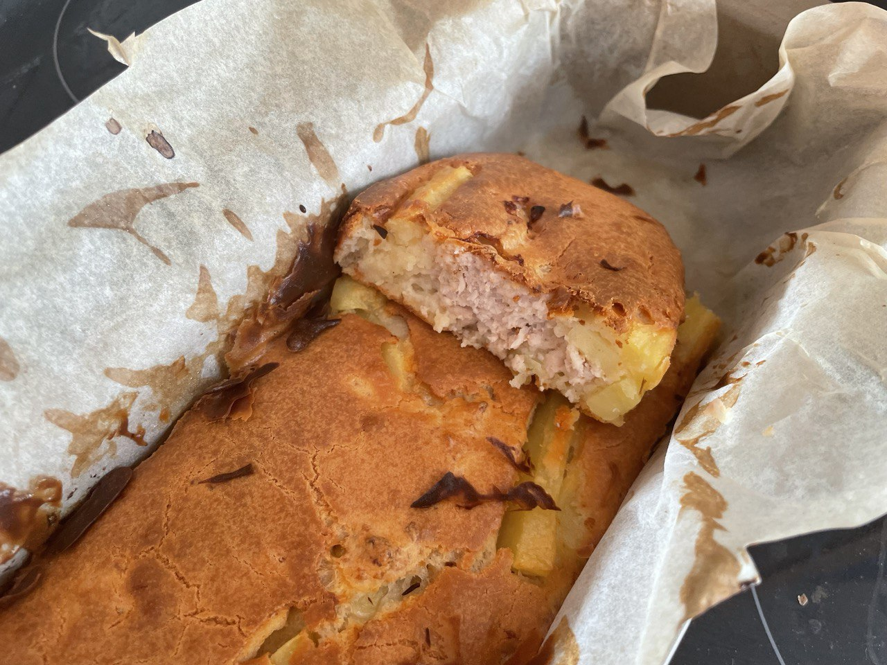

Savory Turkey and Potato Pie Recipe

Description
This delicious, nutritious, and easy to
digest pie consists of baked turkey and potatoes, mixed with a
creamy blend of sour cream, butter, and seasoning.
Mmm... So yummy! You should definitely try it out! :)
Ingredients
- Wheat flour: 2 cups
- Sour cream: 200 g
- Butter: 100 g
- Eggs: 3 pcs
- Baking powder: 1.5 tsp
- Salt: 0.5 tsp
- Ground turkey: 300 g
- Potatoes: 3 pcs
- Salt: to taste
- Paprika: to taste
Steps
- Mix the sour cream with softened butter, baking powder, and salt.
- Add the eggs and beat the mixture with a fork or whisk.
- Continue beating while gradually adding the flour. The consistency of the dough should resemble thick sour cream.
- Season the ground turkey and julienned potatoes with salt and paprika, then mix well.
- Line a baking dish with parchment paper and pour in half of the dough.
- Add the filling and cover it with the remaining dough.
- Smooth the surface with a spatula and bake in a preheated oven at 180°C for 50-60 minutes.
- Your savory pie is ready!